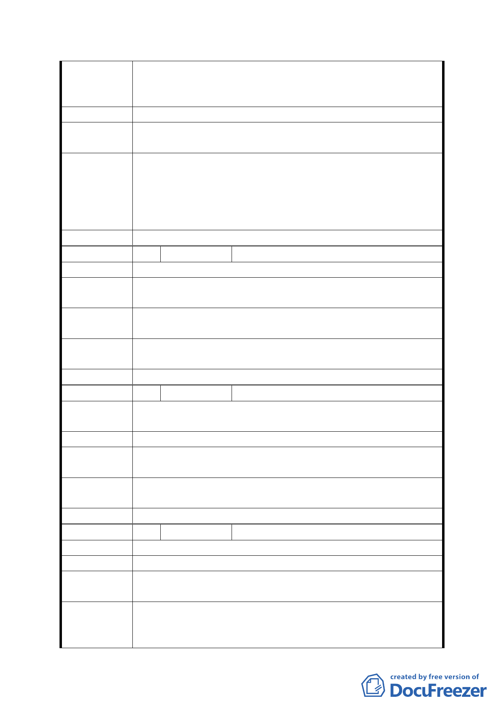

1. 遷墓：可以參考日本墓園規劃，就不會令人討厭，還是
散步、休憩的好地方。
2. 遷軍營：如有更好的規劃。
建議辦法 無
第五次專案小組
審查結論
同編號 1
1.蟾蜍山公墓非本變更案計畫範圍，另有關公墓遷移，本府
市府修正後
回應說明
殯葬管理處正排定本市列管公墓之短期、長期遷葬計畫，
未來遷葬完成之土地如具轉型發展潛力，將視遷葬情形納
入後續都市計畫通盤檢討案辦理。
2.同編號 7 回應 3、4 之說明。
委員會決議 同意依「市府修正後回應說明」辦理
編
號 10 陳情人
盧仁厚
陳 情 理 由 請將「軍營」搬遷。長期以來影響社區發展及繁榮。
建議辦法
請將機關用地納入公園計劃方式來處理，使辛亥捷運站周邊
景觀更好。
第五次專案小組
審查結論
同編號 1
市府修正後
回應說明
同編號 7。
委員會決議 同意依「市府修正後回應說明」辦理
編
號 11 陳情人
高希文
陳情理由
貯留池很好，公園也很好，但請將軍營遷走，整塊作更繁榮
的規劃。
建 議 辦 法 有軍營就反對貯洪池！
第五次專案小組
審查結論
同編號 1
市府修正後
回應說明
同編號 7
委員會決議 同意依「市府修正後回應說明」辦理
編
號 12 陳情人
林靜鈴
陳 情 理 由 停車位不夠。
建 議 辦 法 請蓋停車塔。
第五次專案小組
審查結論
同編號 1
市府修正後
回應說明
依本市停車管理工程處委託辦理之 95 年度臺北市汽機車停
車供需調查，本區域尖峰時段停車供給為 1,832 格，停車需
求為 1,500 格，其停車需求尚有餘裕。本計畫區北側已有本
- 23 -